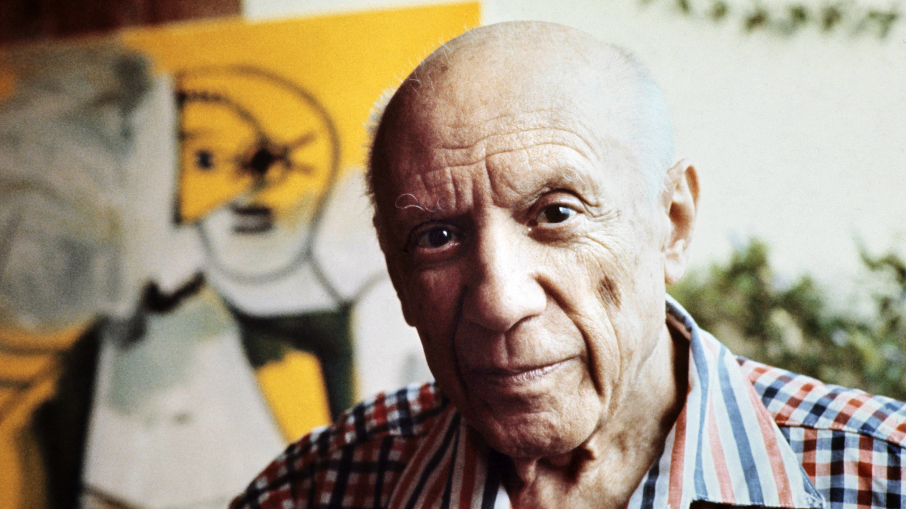

Spanish painter, sculptor, printmaker, ceramicist and theatre designer.

The Great Spanish painter, sculptor, printmaker, ceramicist and theatre designer who spent most of his adult life in France.
Here's a time line of Pablo Picasso's life:
1881 - Born October 25, Málaga, Spain
1900 - Picasso's training under his father began before 1890.
1901 - Picasso's Blue Period (1901–1904), characterized by sombre paintings rendered in shades of blue and blue-green only occasionally warmed by other colours, began either in Spain in early 1901 or in Paris in the second half of the year.
1917 - In February 1917, Picasso made his first trip to Italy.
1940s - During World War II, Picasso remained in Paris while the Germans occupied the city.
1949 - Picasso was one of 250 sculptors who exhibited in the 3rd Sculpture International held at the Philadelphia Museum of Art in mid-1949. In the 1950s, Picasso's style changed once again, as he took to producing reinterpretations of the art of the great masters. He made a series of works based on Velázquez's painting of Las Meninas.
1973 - Died on 8 April in Mougins, France
If you have time, you should read more about this incredible
human being on his Wikipedia entry .